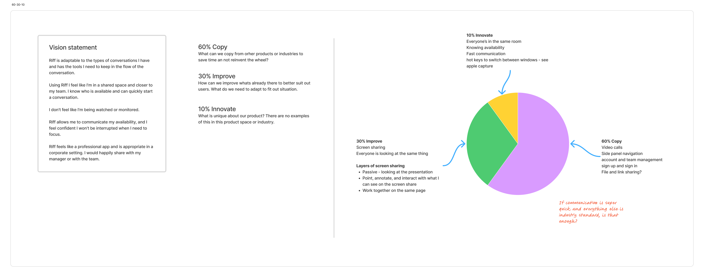
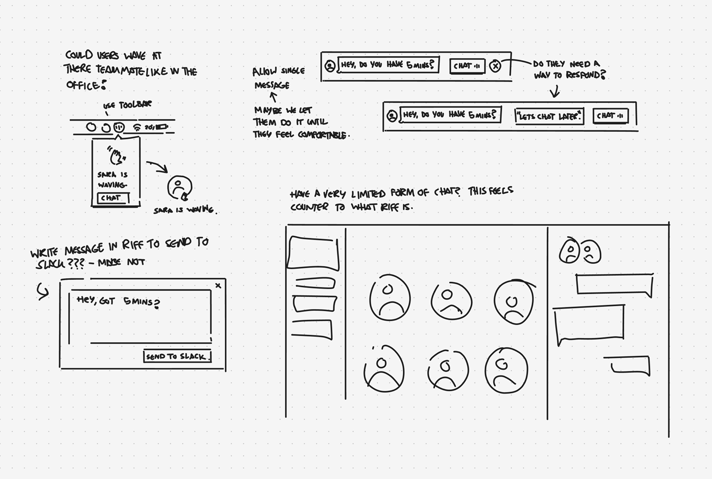
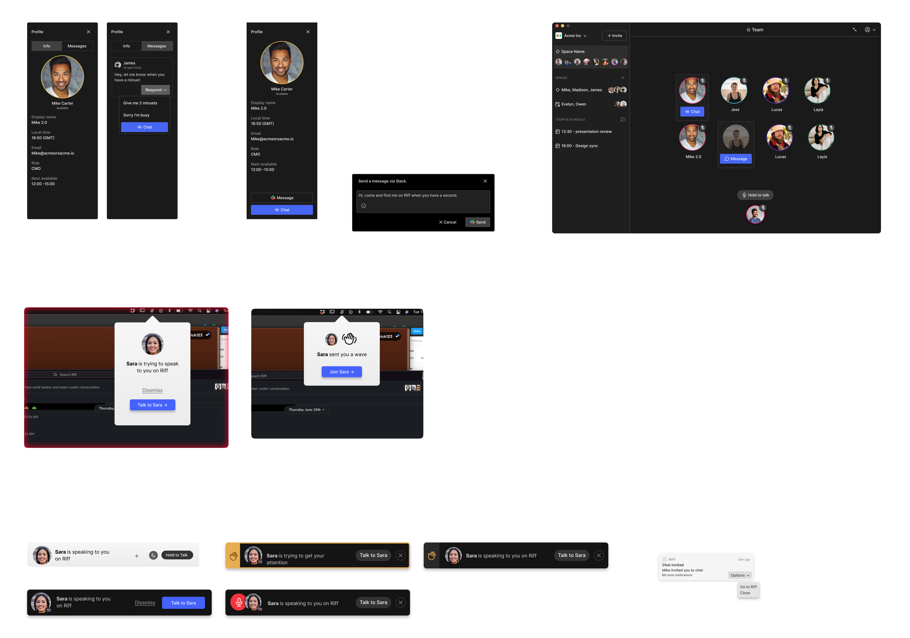
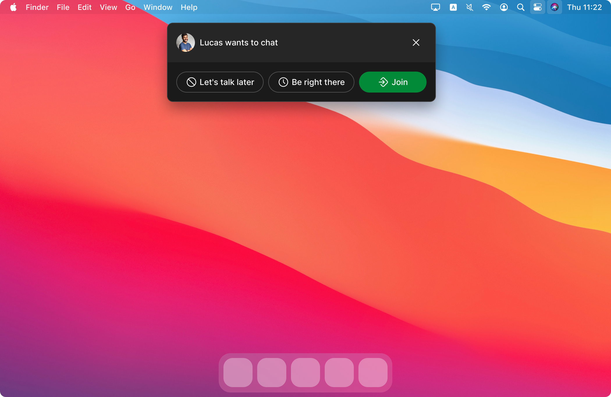

Taking Riff from proof of concept to launch
I joined Riff pre-launch, working directly with the founders to take the product from proof of concept to launch. Riff was a communication tool for remote teams: a space where people could feel connected and start conversations without friction. As the only product designer on a team of eight, I designed everything from the first prototypes to release.
This is the story of how we built it, and of a problem we uncovered that no amount of interface design could fix on its own.
Understanding the product

Insights from our users research
Before starting any design work, I wanted to understand the problem, the users, and the product itself.
Remote teams were already hacking together ways to replicate being in the same room. Some kept an open Zoom call running all day that colleagues could hop in and out of. Others tried purpose-built tools like Tandem, Multi and Teamspeak.
What they missed from the office was the easy flow of information: overhearing conversations, turning around to show a colleague something on your screen, impromptu problem-solving, and casual chats. What they had instead was slow. Setting up a call in Zoom or Google Meet took too many steps. Or people had long, typed conversations in Slack. An arduous way to solve a problem that would take two minutes out loud.
Breaking down the product with the founders: 60/30/10


The 60/30/10 exercise and the now/next/later plan that came out of it
I looked at Riff through the lens of 60% copy, 30% improve, 10% innovate.
Riff was a video-calling tool, so there were plenty of well-established flows, patterns and components that users already knew, which we could lift and apply. It made no sense to reinvent the wheel.
The improvements focused on speed and friction. Such as joining a call, sharing a screen, and seeing what someone else is looking at. In other tools, these were cumbersome, multi-step interactions, and they were what frustrated our users most. With Riff, users could start a video call by simply clicking on a teammate.
The innovation was the team space. The default room where the whole team sat together. It was audio-only, where anyone could talk to everyone with a press of a button. It was essentially a game lobby, but nobody had brought that into a corporate tool. That's where we put most of our design effort, because that's where the unknowns were.
With a full conceptual and technical picture of the product, we could run a now/next/later exercise, cut the noise, and take informed, practical steps.
How we worked
We ran a weekly loop: onboard a team, understand their current workarounds and what they hoped Riff would fix. A week later, we'd check back in with both leadership and the people using it day-to-day, then bring what we learned back to the team to decide what to change. We'd ship small, regular changes that either fixed a problem or moved us closer to understanding what Riff needed to be.
That loop is how everything in the rest of this story surfaced.
What worked

The main Riff view
Managers, founders and producers found Riff valuable for connecting with their teams and having the ten-minute conversations that kept projects moving, without chasing people around Slack or booking meetings. It worked best with teams that already knew each other from the office. With Riff, they could pick up where they left off.

Multiple screen shares, each with its own tab
Multiple simultaneous screen shares, with automatic focus on shared content, removed micro-interactions that users felt were unnecessary in other video-calling apps.
Calendar integration was the most requested feature, providing users with an overview of their day and all their calls in one place.
At its peak, teams were spending over six hours a day in Riff, comparable to Slack itself.
The numbers were dwindling
Even with core customers who loved the product, overall usage was falling. Two behaviours kept surfacing in our weekly interviews.
Slack first
New or less confident teammates didn't feel comfortable pulling someone straight into a private conversation. It felt like interrupting. So they'd Slack them first to check if they were free, which brought them back into Slack and lowered the value of Riff.
"I don't like being available all the time"
Some users leaned on Riff's do-not-disturb status to protect their focus time. But some left it on all day, something we hadn't designed for. Once one person on a team did that, it gave everyone else quiet permission to do the same, and Riff's value dropped fast, because the whole model depended on people actually being present.
The problem wasn't the interface
I explored these insights with the founders by building a problem tree, articulating what we believed was causing the higher-level problems and turning them into areas we could actually tackle.
That work changed the framing. Both behaviours were symptoms of the same thing: people didn't feel socially safe being present. The solution wasn't a better button or a clearer status. It was about trusting the product and feeling comfortable with it.
Exploring the solution


Early sketches and wireframes exploring the problem
I explored a range of directions, from nudging a teammate to more asynchronous options like messages and notifications. But we wanted to keep the DNA of Riff, which was synchronous communication.

The invite: accept and join, or reply in real time with a pre-selected message
I landed on a solution that removed the need to check first: instead of pulling someone into a call, you sent an invite they could respond to in real time, either by accepting and joining, or by replying with a pre-selected message. It went some way towards making hesitant users feel comfortable without alienating those who were already happy.
Where it landed
We didn't fully solve the social-permission problem before running out of runway. Slack shipped improved calling not long after, and for most teams, that was good enough to remove the pressure to switch to something new.
But the product worked. The teams who used it loved it, and it went from first concept to hours of daily use with me as the only product designer on the team.